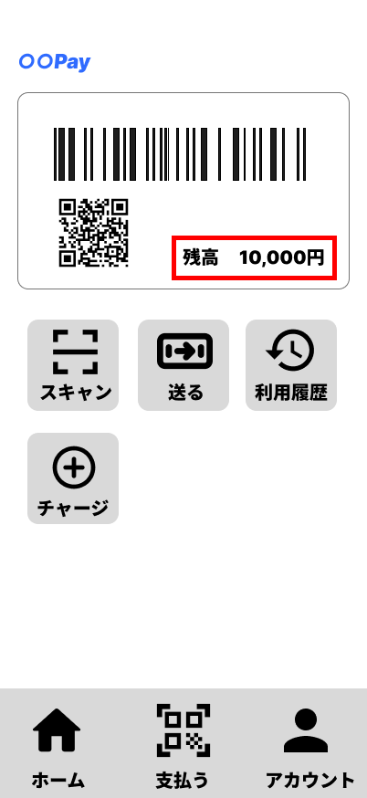
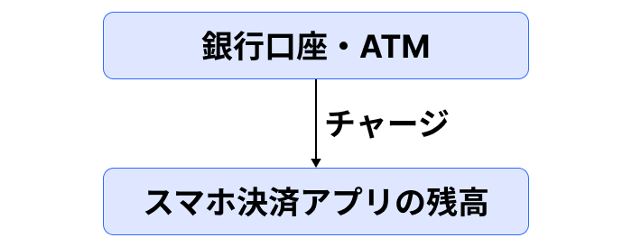
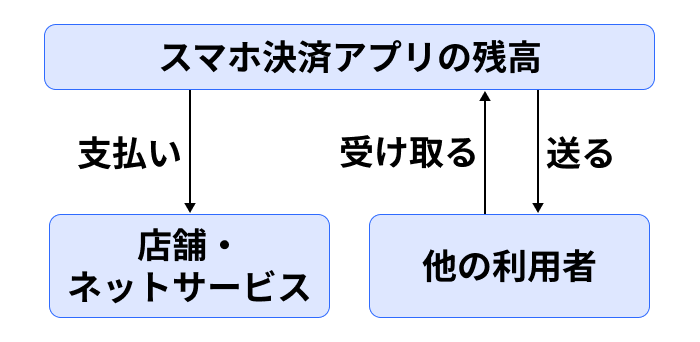
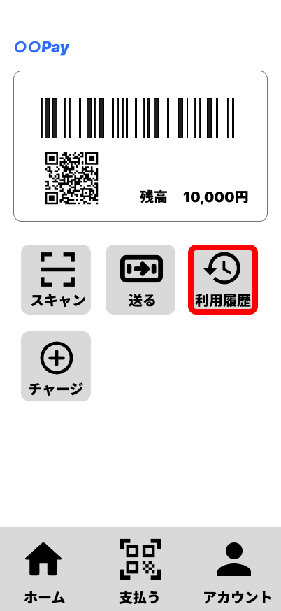

2. スマホ決済の全体像
スマホ決済では、スマートフォンを使って、お店やネットサービスで代金を支払ったり、他の利用者に残高を送ったりすることができます。
これらの機能を利用するときに中心となるのが、スマホ決済アプリの「残高」です。残高は、お店やネットサービスでの支払い、他の利用者とのやり取りなどに使います。

残高が足りない場合には、「チャージ」という操作を行い、アプリで使える金額を増やします。チャージには、登録した銀行口座を使う方法やATMを使う方法などがあります。

スマホ決済アプリにある残高は、お店やネットサービスでの支払いに使うことができます。また、他の利用者へ残高を送ったり、反対に他の利用者から受け取ったりすることもできます。

チャージや支払い、他の利用者とのやり取りなどを行うと、その内容がアプリに記録されます。過去に行った取引は「利用履歴」から確認できます。

このように、スマホ決済では、残高を中心として、チャージ、支払い、他の利用者とのやり取り、利用履歴などの機能が関係しています。
これから、それぞれの機能について詳しく見ていきます。